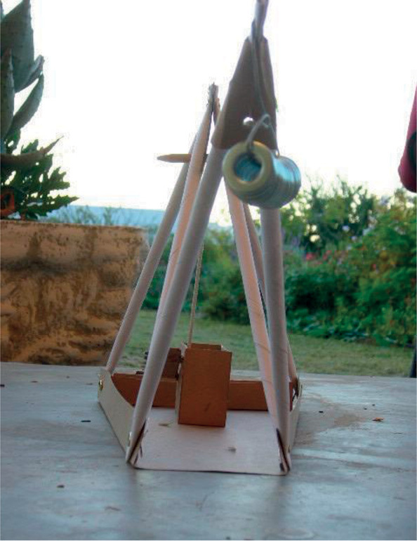

Build a model crane
For this term's mini-PAT, you will work on your own and as part of a group to build a crane that can be used to pick up pieces of metal. You will work through all the stages of the design process while you build a model crane with an electromagnet. Your teacher will assess you on all the stages of the design process.

Figure 1

Figure 2
Week 1
Design part 1 (30 minutes)
A scrap metal dealer sorts magnetic and non-magnetic metals into separate piles for recycling. They use a crane with a magnet, but find it difficult to remove the metal pieces from the magnet. They need a magnet that can be switched on and off to help with this.
The company wants you to design and build a model crane that:
- should be a simple frame structure,
- should be made strong, stiff and reinforced through triangulation,
- should work with a pulley and a crank mechanism,
- should pivot, or it should raise and lower its arm, and
- is made from any materials. Some can be bought, while others can be simple materials, such as paper dowels or elephant grass.
The crane should have an electromagnet attached to its arm. The electromagnet:
- should have a soft iron core made from a bundle of short lengths of iron wire,
- must have a switch so that it can be switched on and off;
- must be strong enough to pick up several steel paperclips, nails or coins.
Design brief with specifications and constraints
Work on your own. This task will be assessed. Read through the information given under "Design Part 1" before completing the three sets of questions.
Ask yourself:
- What is the problem?
- Who is the solution for? Or, in other words, who will benefit from it?
- What should the solution do?
- Will it benefit or harm the community?
1. Now write the design brief. Use the answers of the questions you have just answered to help you.
2. Identify the specifications.
(a) List the specifications for the model crane.
(b) List the specifications for the electromagnet.
3. Identify constraints, if there are any.
Investigate cranes (30 minutes)
Identify cranks and pulleys
Work on your own. This task will be assessed.
1. Study all four images of cranes on the following pages. All the cranes have a crank and a pulley system. Some cranes have more than one pulley.
2. Look at where the cranks are placed. Mark each crank with the letter C.
3. Look at where the pulleys are placed. Mark each pulley with the letter P.
4. Which of the cranes have pulley systems with three or more pulleys?

Figure 3: Crane in harbour
Figure 4: Tall builder ' s crane

Figure 5: Crane on a truck

Figure 6: Crane on caterpillar tractor
Look at this model crane
Work in pairs. Look at the photographs on the next few pages, showing the steps to make a model crane. Answer the questions after the series of photographs.

Figure 7

Figure 8
Figure 9
Figure 10

Figure 11

Figure 12

Figure 13

Figure 14

Figure 15
Figure 16
1. The frame of the model crane in the photographs is built from paper tubes made into triangles (see Figure 8). How many triangles were used?
2. Mark the triangles on Figure 9. Number them from 1 onwards.
3. List the materials used to build this model.
4. Identify the materials and the method used for the joints on this model.
5. Look at Figures 11, 12, 13 and 14. Look at how the pulley is made. List the materials used for the pulley.
6. Look at Figure 14. Look at how the crank is made. List the materials used for the crank.
7. Note where and how the weight has been attached to the end of the pulley. Explain what you see.
8. What is the purpose of the box of nails at the back of the crane?
Sketching and perspective drawing (60 minutes)
Sketch your ideas
1. Read the specifications for your model crane again. Remember that you have to use materials suitable to build a frame structure.
2. Think of two different designs.
3. Sketch one of your designs on the next page. Add labels to show the parts of the crane and the materials you will be using. This sketch will be assessed.
Use this checklist to make sure that you have included everything.
|
Things to look at |
|
|
Does your drawing have a heading? |
|
|
Did you label the different parts? |
|
|
Did you indicate the materials you will use? |
Your teacher will assess your sketch using a scale from 3 to 1:
3: Good work, 2: Satisfactory work, 1: Poor work
4. Draw your other design in single vanishing point perspective. Your drawing doesn't have to be drawn to scale. Use this check list to see if you have included everything. This drawing will not be assessed.
|
Things to look at |
|
|
Does your drawing have a heading? |
|
|
Did you mark the vanishing point? |
|
|
Did you draw the face of the crane that shows the most detail? |
|
|
Did you draw feint guidelines from the corners of the shape of the crane to the vanishing point? |
|
|
Did you draw horizontal and vertical lines to show the back of the crane? |
|
|
Did you darken the feint lines that show the outline of the crane? |
Sketch one of your designs here:

Sketch your other design here:
Week 2
Planning to make the crane (30 minutes)
Now it is time to prepare for the actual building of the model crane. Work in a group of three or four. You will build the model together as a team.
Decide what you will do and how
Work as a team for the first task. Work on your own for tasks 2, 3 and 4. These tasks will be assessed.
1. Look at all the designs. Each member will have two designs to offer. Discuss all the designs. Decide which design the team will build. Your group can also develop a completely new design. Remember what you learnt about reaching an agreement last term when deciding this. If you develop a new design, one person has to make a design sketch of the new design. Use the space below for this drawing.
2. Make a list of all the materials you plan to use to build your model.
3. Make a list of the tools you will use to build the model, for example the tools that you will use to measure and cut with.
4. Think about your own safety when you use tools. Some tools can be dangerous if used incorrectly. Write down one safety rule for one of the tools you will use.
Order of work
You are going to present the steps you will follow to build the model as a “flowchart” . Flowcharts are sometimes called flow diagrams.
- Flowcharts are designed to make information easier to understand.
- They are fun to use, because you can use colours and pictures instead of just words.
- You will make a process flowchart. A process flowchart shows the method or process of making something from start to finish. There are other types of flowcharts too.
- The first shape identifies the topic or the first step of the process.
- Arrows show the direction of the process from the first step to the end. Follow the steps to read the process in the correct order. They can run horizontally or vertically.
- The last shape is used for the last step in the process.
Figure 17: A flow diagram for building a model of a crane
Plan to make an electromagnet (30 minutes)
You made an electromagnet in Chapter 3. An electromagnet is made up of:
- a core that can be an iron bolt for a hard core, or a bundle of short pieces of iron wire for a soft core;
- a long length of insulated wire to wrap around the core, and
- insulation tape to hold the components together.
The circuit for the electromagnet is made up of:
- a battery. You can use four 1,5 V D-cells. We use D-cells instead of 1,5 V AA-cells (penlight batteries), because the D-cells contain more material and therefore last longer.
- a battery holder. The cells must be connected in series, one behind the other for them to provide 6 V of power. You can use insulation tape to tape them together.
- a switch. Use a switch that will stay on until you want to switch it off. You can make your own or buy a switch.
- wire to connect the different components.
Plan to make an electromagnet
1. List the materials you will use for the electromagnet.
You can use thin telephone wire instead of insulated copper wire. Because this wire is thin, you get more turns when you wrap it around the nail. More turns will make the magnet stronger.
2. List the equipment you will use to build the electromagnet and its circuit. Make sure you use the correct tools. Don't cut wire with scissors.
3. Write at least one safety rule to follow while making the electromagnet.
4. Draw a flowchart of the method you will follow to build the electromagnet and its circuit. This task will be assessed.
Draw a circuit diagram (30 minutes)
Your teacher will assess this task. We draw working drawings before we start making a model. When you plan to make a circuit, you first draw a circuit diagram.
Draw a circuit diagram for the electromagnet
Indicate on your circuit diagram:
1. The heading. That will be what the diagram is for.
2. The positive and negative poles on the battery.
3. The direction of the flow of current. Use an arrow to show the direction the current will flow in.
4. The correct symbols for the different components. Use the symbol for an electromagnet as shown below.
Figure 18: Circuit symbol for an electromagnet
Draw your circuit diagram here:
|
iron nail for iron core |
insulated wire |
|
|
|
four D-cells |
switch made from cardboard, steel paperclip and drawing pins |


Figure 19: Materials used to make an electromagnet
Figure 20: Electromagnet
Start to build the crane and electromagnet (30 minutes)
Make sure that you finish building the model crane and the electromagnet in the time given. Pay special attention to the time allocated for each of the tasks. You may not have more time.
Remember to work safely and neatly. Remember to give each person a task or a part of the model to make. Each person has to work equally hard to build the model. Pack away your model and its parts at the end of each lesson in a box with your names on it.
Sometimes a design does not work out. You may make changes and add things to your model so that it will work.
- You have 180 minutes (6 × 30 minute lessons) to put the crane together and to build the electromagnet.
- The time indicated below is a guide for you to follow.
- Remember to evaluate as you go along.
- Your group's model with its electromagnet will be assessed.
Prepare to build
1. Gather all your materials and tools.
2. Roll as many straws as you think you will need, as well as a few extra ones.
3. Start making the crane and the box it will be mounted on.
4. Start wrapping the iron pieces with the insulated wire.
Week 3
Build the crane 30 × 4 = 120 minutes
Build the frame of the crane (30 minutes)
- Make sure that the joints are well made and strong.
Join the frame to the base (30 minutes)
- Measure the structural members accurately. This will contribute to a stable crane that balances properly.
Practise measuring
Use a good-quality, firm ruler. Make sure the ruler is marked in millimetres.
Start measuring from the zero (0), not the edge of the ruler.
Build the crank and pulley (30 minutes)
- Make the crank and insert it in its mounting.
- Make the pulley.
Attach the pulley to the frame (30 minutes)
- Make sure that the frame is strong and firm enough where the pulley will be attached to the frame.
- Attach the pulley to the crane.
Use the correct tools
Use a sharp pair of scissors or a craft knife to cut string, paper or card.
Use a sharp nail or an awl to make a hole.
Week 4
Build the electromagnet (30 × 2 = 60 minutes)
Make the electromagnet (30 minutes)
- Attach the pulley to the crane.
- Complete the electromagnet.
Build and assemble the electrical circuit (30 minutes)
- Assemble the electrical circuit for the electromagnet.
- Attach the circuit to the crane model.
- Add the counterweight materials to the crane so that it will balance and not fall over.
- Evaluate and make any changes you think are necessary.
Revise and draw: oblique drawing (30 minutes)
Oblique drawing:
- Draw the lines for length and height straight up and straight across, exactly like the front view of a box in a 2D drawing.
- Oblique drawings should be scale drawings. For the front view of an oblique drawing, use true scale measurements. So if the length of the object is 600 mm and the scale is 1:10, you draw the length as 60 mm. Indicate the scale below your drawing.
- Corners are projected at a 45 ° angle and the depth measurement must be half the true scale measurement.So if the depth is 300 mm and the scale is 1:10, you must draw the breadth line to 15 mm.
- Make sure that you have given your drawing a heading.
Scale:
- We often draw objects smaller than they really are so that the drawing can fit on a page.
- A scale drawing of 1:4 is four times smaller than the real object. If the object is 400 mm wide, we draw its width as 40 mm.
Make an oblique drawing
Work on your own.
1. Choose one part of your model to draw in oblique view.
2. You should draw the part to scale. You can draw it larger than it is on the model. If you draw it twice the real size, show the scale as 2:1.
3. Draw the part on the grid paper on the opposite page.
4. Use the space below to make a rough drawing first.

Develop an evaluation sheet (30 minutes)
Your crane with its electromagnet is finished. Now you have to develop a checklist to judge your crane and how well you met your specifications.
- Does it meet the criteria you identified as specifications?
- Does the electromagnet work well?
To judge the cranes, you will develop an evaluation sheet. Remember you developed an evaluation sheet to evaluate your tower last term.
Develop an evaluation sheet
1. Work on your own. This task is for assessment. Make a list of the features the crane model must have. Use your list of specifications to help you.
Here is an example:
|
The crane needs to work properly. |
||
|
The crane needs to lift metal objects. |
||
2. Work as a team.
(a) Combine your individual sheets into one joint evaluation sheet.
(b) Include a three-point scale. 3: Good, 2: Just all right, 1: Poor.
This evaluation sheet will be used to evaluate your own model and the models that the other groups have built.
3. Use the evaluation sheet to evaluate your own model.
Week 5
Evaluate the other models (30 minutes)
When you evaluate work, you have to do your best to be objective and fair. This means that you must not give high marks to your friends unless they really deserve it. You have to give them the marks they deserve for the work they have done, and you should be able to explain and support the mark you gave. This means that your comments have to be valid.
To be objective means to judge something for what it is without being emotional or personal.
Evaluate the models of other groups
1. Work as a team.
2. Copy your evaluation sheet three or four times.
3. Evaluate the models of three or four teams. Remember to write down the names of the teams you are evaluating.
Prepare your presentation (30 minutes)
Each team should prepare an oral presentation of their plans and functioning model to the class.
The presentation should be longer than five minutes but shorter than seven minutes. The class will have three lessons (90 minutes) to do all the presentations.
1. Plan your presentation.
- All the members of your group should be part ofthe presentation.
- Decide what each person will do.
- Each person should talk about the work they didand the role they played.
- One learner should show and explain the designsketch.
- Another learner should explain the circuit diagramand draw it on the board.
- One learner should show how the crane with theelectromagnet works.
- Another learner should talk about the problems the group experienced.
- Include
the following information in your presentation:
- how an electromagnet works,
- how to make an electromagnet stronger,
- why it is important to sort metals.
- Make an artistic drawing of your model crane with its electromagnet.
- Decide who will start and who will talk next. Know when it is your turn.
Hints for presenting your work:
Stand up straight and look at the class while you speak.
Do not read your presentation.
Speak clearly. Do not mumble or whisper. Everyone should be able to hear you.
Know when it is your turn to speak.
Keep to the time limit.
2. Use the rest of this lesson to practise your presentation. You might also need to spend some time at home for this. You have lots of time to practise as you will be doing self-reflection in the next lesson.
Reflection and evaluation (30 minutes)
To reflect means to look back. Looking back at what you did and how you completed a task is an important learning activity. It gives you the opportunity to identify the mistakes you made, as well as what you did well. From this, you learn not to make the same mistakes again, and how to improve on what you do well.
Reflect and evaluate your own work and contribution
Work on your own. This task is for assessment.
1. Write down at least five activities that you want to reflect on. Choose at least:
- one practical activity,
- one drawing activity,
- one activity where you had to answer questions, and
- one group activity.
2. Tick a face to show how you felt about each activity.
|
Description of the activity |
|
|
☹ |
Deliver your presentations (30 minutes)
It is important that everyone takes part as you will all be assessed by your teacher. You will have three lessons (90 minutes) to complete the presentations.
Oral presentation
1. Each person's oral presentation will be assessed separately.
2. Your teacher will use an evaluation sheet like the one below to assess you.
|
Criteria |
Good |
Satisfactory |
Poor |
|
The learner speaks clearly so that everyone can hear. |
|||
|
The learner speaks confidently, knows the work and what he or she wants to say. |
|||
|
The learner makes eye contact with learners sitting in the front and in the back of the class. |
|||
|
The learner explains his or her own role in the project. |
|||
|
The learner shows and demonstrates the model/drawing/diagram. |
Week 6
Presentations continued 30 × 2 = 60 minutes
All the presentations must be finished by the end of this week.